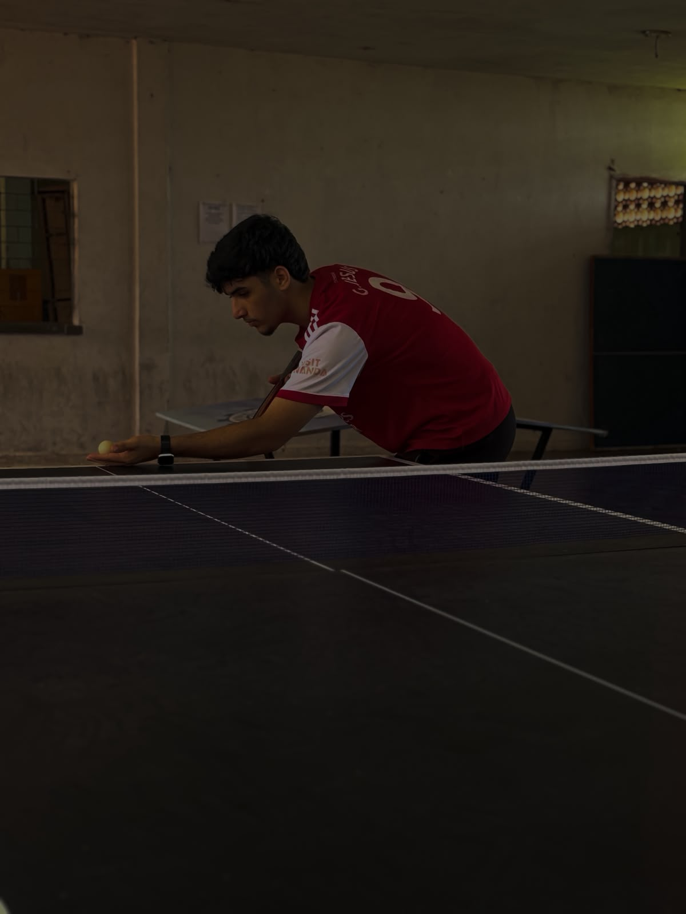

SnapFolio
Arthur Cavalcante
I'm a
Olá! Sou Arthur Cavalcante. Sou apaixonado por tecnologia, com maior interesse em hardware, além de gostar muito de matemática e desafios que envolvem lógica e raciocínio. Também sou fã de esportes, que me ajudam a desenvolver disciplina, foco e trabalho em equipe. Estou sempre buscando aprender coisas novas e aprimorar minhas habilidades para crescer profissionalmente.

Arthur Cavalcante
Creative Director & Developer
Me conheça!
Apaixonado por tecnologia, especialmente hardware. Gosto de matemática e esportes, o que fortalece meu raciocínio lógico, disciplina e interesse por novos desafios.
Olá! Sou um estudante apaixonado por tecnologia, especialmente pela área de hardware. Tenho interesse em compreender o funcionamento dos computadores e buscar soluções para desafios técnicos. Além disso, gosto de matemática e esportes, atividades que fortalecem meu raciocínio lógico, disciplina e dedicação. Estou sempre em busca de novos conhecimentos e oportunidades para desenvolver minhas habilidades. .
Tenho facilidade para aprender novas tecnologias e gosto de trabalhar na resolução de problemas. Sou dedicado, responsável e procuro sempre aprimorar meus conhecimentos, especialmente na área de hardware, buscando crescimento pessoal e profissional por meio de novos desafios. .
5+
Projetos completos
2+
Anos de experiencia!
96%
Clientes satisfeitos
Área de Interesse
Hardware e Tecnologia
Nível
Estudante
Escolaridade
Ensino Medio
Localização
Mombaça, Ceara
Clientes Satisfeitos
Projetos
Horas de Suporte
Trabalhadores Dedicados
Habilidades
Desde pequeno, tenho curiosidade em entender como as coisas funcionam. Enquanto algumas pessoas apenas utilizam a tecnologia, eu gosto de descobrir o que existe por trás dela. Hardware é a área que mais me chama atenção, pois une lógica, prática e resolução de problemas. Fora da tecnologia, encontro nos esportes e na matemática desafios que me motivam a evoluir constantemente.
Front-end
HTML/CSS
92%Conhecimento avançado de HTML5 semântico e técnicas modernas de CSS3
JavaScript
85%Fortes habilidades em ES6+, manipulação do DOM e frameworks modernos
React
80%Experiência com hooks do React, gerenciamento de estado e arquitetura de componentes
Back-end
Node.js
85%Desenvolvimento de JavaScript no lado do servidor com Express e APIs REST
Python
90%Desenvolvimento em Python com Django e ferramentas de análise de dados
SQL
83%Design de banco de dados, otimização e consultas complexas
Resumo
Algumas pessoas desmontavam brinquedos por curiosidade. Eu queria entender por que eles funcionavam. Com o tempo, a curiosidade deixou de ser apenas um hábito e se tornou a forma como enxergo o mundo. Gosto de encontrar padrões, resolver problemas e descobrir o que existe por trás das coisas, seja em um computador, em uma equação ou em uma partida de esporte.
Resumo Profissional
Movido pela curiosidade e pela vontade de entender como a tecnologia funciona além da superfície. Tenho grande interesse por hardware, lógica e resolução de problemas, buscando constantemente transformar dúvidas em conhecimento e desafios em aprendizado.
Informacao de contato
- Rua Padre Pereira. N - 59
- arthur.cavalcante302317@gmail.com/li>
- +55 (85) 98227-5824
- linkedin.com/in/example
Habilidades Técnicas
Desenvolvimento Web
95%
UI/UX Design
85%
Arquitetura de Nuvem
90%
Gerenciamento de Projetos
90%
Experiencia Profissional
Estudante de Tecnologia
2024 - Atualmente
Projetos Pessoais
- Troco horas de entretenimento por horas de descoberta. Gosto de investigar, testar e aprender na prática, transformando curiosidade em conhecimento e desafios em oportunidades de crescimento.
- Desenvolvo minhas habilidades por meio de estudos, pesquisas e experiências práticas, sempre buscando aprender novas técnicas e ampliar meu conhecimento em tecnologia e hardware.
- Transformo interesse em aprendizado. Gosto de investigar o funcionamento de equipamentos, testar ideias e expandir meus conhecimentos através da prática e da experimentação.
- Acredito que os melhores aprendizados surgem da tentativa, do erro e da persistência. Cada desafio superado amplia minha visão sobre tecnologia e fortalece minha capacidade de encontrar soluções.
Hardware Explorer
2024 - Atualmente
Estudos Independentes.
- Dedico parte do meu tempo ao aprendizado contínuo, explorando tecnologias, compreendendo o funcionamento dos computadores e desenvolvendo habilidades que fortalecem minha base técnica.
- Acredito que o conhecimento é construído aos poucos. Cada nova habilidade aprendida e cada desafio enfrentado contribuem para minha evolução dentro da tecnologia.
- Sempre procuro aprender algo novo, seja explorando tecnologias, entendendo o funcionamento de equipamentos ou enfrentando desafios que estimulem meu raciocínio e criatividade.
- Cada novo desafio é uma oportunidade para aprender algo que eu ainda não sei. É assim que transformo curiosidade em experiência e conhecimento em evolução.
Escolaridade
Ensino Médio em Andamento
2024 - 2027
Placido Aderaldo Castelo.
Interessado em tecnologia, hardware e matemática, desenvolvendo conhecimentos por meio de estudos, pesquisas e experiências práticas.
Construindo conhecimento em tecnologia, lógica e resolução de problemas.
2020 - 2024
Escola Municipal [EEEP]
Participação ativa nos estudos, com interesse especial por tecnologia, hardware e matemática. Sempre buscando aprender novas habilidades e ampliar meus conhecimentos.
Certificados
Tecnologia e Hardware
2020 - Atualmente
Aprendizado Contínuo em Tecnologia
Atualmente
Portfolio
Nem todo conhecimento vem de certificados. Grande parte do que aprendi surgiu da curiosidade, da prática e da vontade de entender como as coisas funcionam. Cada descoberta, por menor que pareça, contribui para a pessoa que estou me tornando.
{kind=link}
{kind=link}
{kind=link}
Servicos
Não me interessa apenas o resultado final, mas todo o processo por trás dele. É no entendimento das partes que encontro minha maior motivação para aprender tecnologia.
Mundo dos Sistemas
Soluções Técnicas
Tenho interesse em tecnologia e em entender como os sistemas funcionam na prática. Gosto de explorar hardware, aprender novos conceitos e transformar curiosidade em conhecimento aplicado, sempre buscando evoluir minhas habilidades.
Ver todos servicosO que ninguém vê funcionando
Aprender, para mim, não é decorar respostas, mas descobrir como elas existem. É isso que me faz continuar explorando tecnologia e novos desafios.
Sistema de design
Acredito que boas ideias merecem ser vistas. Por isso, utilizo o design como uma ferramenta para transformar conceitos em experiências visuais que comunicam, inspiram e deixam marcas. Cada projeto é uma oportunidade de combinar criatividade, estratégia e personalidade em algo único.
Identidade Visual
Desenvolvimento de marcas e elementos visuais que transmitem personalidade, fortalecem a presença de um projeto e criam conexões autênticas com o público.
Experiências Digitais
Desenvolvimento de interfaces modernas e funcionais, unindo design e tecnologia para criar experiências intuitivas, acessíveis e visualmente marcantes em diferentes plataformas.
Crescimento Criativo
Cada projeto é uma oportunidade de evoluir, experimentar novas ideias e expandir habilidades. Busco constantemente aprimorar meu trabalho através da criatividade, aprendizado contínuo e atenção aos detalhes, transformando desafios em resultados que geram impacto.
Soluções Visuais
Criação de conteúdos e materiais digitais que unem criatividade, comunicação e design. Meu objetivo é desenvolver projetos que transmitam mensagens de forma clara, fortaleçam identidades visuais e gerem conexão com o público.
Depoimentos
O que dizem sobre meu trabalho e dedicação
Arthur sempre demonstra muita criatividade e atenção aos detalhes. Seus trabalhos têm personalidade e mostram o quanto ele se dedica para entregar algo de qualidade.

Mariana Silva
Colega de ProjetosAlém de ser muito comprometido, ele está sempre buscando aprender coisas novas. Sua capacidade de transformar ideias em projetos visuais impressiona quem acompanha seu trabalho

Daniel Morgan
Amigo e Parceira de EquipeArthur se destaca pela facilidade em resolver problemas e pela vontade de evoluir constantemente. Seus projetos combinam criatividade, organização e inovação.

Emma Thompson
Colega de ClasseTrabalhar com ele é uma experiência muito positiva. Sempre apresenta soluções criativas e demonstra responsabilidade em cada etapa do processo

Christopher Lee
Participante de Projetos AcadêmicosO que mais chama atenção é sua curiosidade e dedicação. Ele não faz apenas o básico, procura entender cada detalhe para alcançar os melhores resultados.

Olivia Carter
Amiga e ColaboradoraArthur possui um olhar diferenciado para design e tecnologia. Sua criatividade, aliada à vontade de aprender, faz com que seus projetos tenham um resultado profissional e autêntico.

Nathan Brooks
Colega de DesenvolvimentoContato:
As necessidades dele resultam de algo que ele foge, de fato, sendo que ele quer se sentir parte
Informações de Contato
Minha Localizacao
Rua padre Pereira
Mombaça, N 59
Numero de contato
+55 (85) 98227-5824
Email Contato
arthur.cavalcante302317@gmail.com